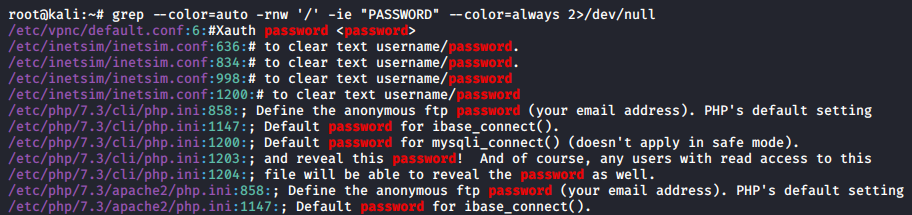

We can use this command to check for the word "password" in files:
grep --color=auto -rnw '/' -ie "PASSWORD" --color=always 2>/dev/null
grep --color=auto -rnw '/' -ie "PASSWORD=" --color=always 2>/dev/null
